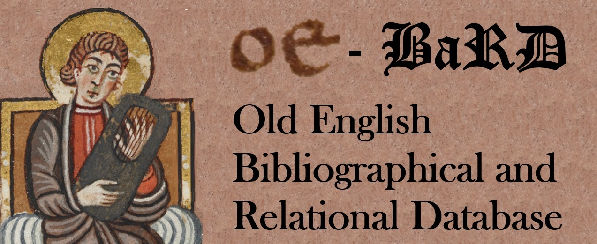

Old English Bibliographical and Relational Datbase [OE-BaRD]

The EMERGENCE project will use a multifunctional database in order to trace how scholars and artists in the nineteenth century interacted with
Old English language and literature. The database will enable researchers to track various key elements of the 19th-century reception of early
medieval English, including which individuals were engaging with Old English, how they were connected to each other through networks and when and
where they worked. This database will allow for the identification of hubs of activity and pinpoint when and where certain texts, methods or artistic
appropriations were of particular interest among European authors, as well as showcase developments over time and place. The database will further
allow researchers to identify relevant case studies for their individual projects and situate these within a broader context. This database will be
powered by the Nodegoat platform.
The Old English Bibliographical and Relational Database (OE-BaRD) will be launched in 2027.